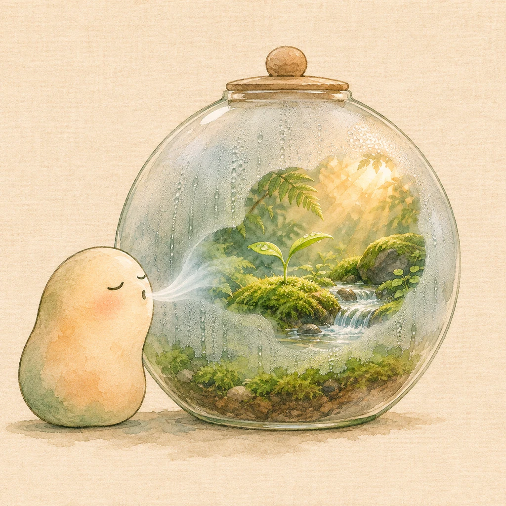

BREATHE · RESET
숨콩
복잡한 생각은 잠시 두고,
작은 콩과 천천히 숨을 골라요.
0오늘 완료
0연속 일
0모두 완료
01
편안하게 4초 들이쉬고 6초 내쉬어요
호흡 고르기
02
시간 고르기
치료 목적이 아닌, 잠깐 숨을 고르는 가벼운 도구예요.
안정 호흡01:00
천천히
들이쉬어요
4숨콩이 빗물을 모으고 있어요
편안하지 않다면 언제든 멈춰도 괜찮아요.